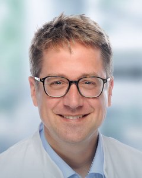

Department of Paediatrics and Adolescent Medicine
Medicine for children and adolescents, with family and humanity
 Placeholder for a photo of the whole team
Placeholder for a photo of the whole teamMedicine for children and adolescents, with family and humanity
Welcome
[Personal welcome from Prof. Liebau on the department's values, family-centred care and humanity in treatment]
Our department is a tertiary care centre. Together with the other departments of Uniklinik RWTH Aachen, we offer almost every treatment that serious illness in childhood and adolescence may require.
We train medical students, doctors, nurses, physiotherapists and speech therapists, investigate the causes of disease and develop new treatments.

Dates
Overview
Sections, general paediatrics, wards, the Social Paediatric Centre and nursing at a glance.
Learn more →Specialist outpatient clinics and centres, from neonatology to rheumatology.
Learn more →Research groups, studies and registries, teaching and doctoral theses.
Learn more →Stories from the wards and the hospital school, events, activities and the people who support us.
To the feed →Job vacancies, specialist training, nursing and medical school.
Learn more →Emergencies, appointments, referrers, directions and the new patient portal.
Learn more →Everyday life
For World Diabetes Day, our paediatric diabetes team will be in the foyer on 18 November from 10 am to 2 pm.
Production of cell therapies begins in new clean rooms; guests are invited to the opening on 14 November.
Maths at the bedside, German in the classroom: how lessons work in hospital.